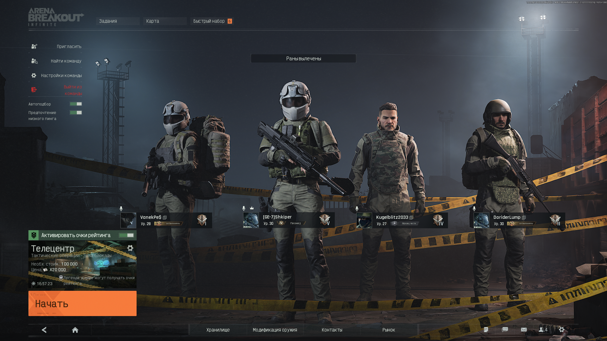
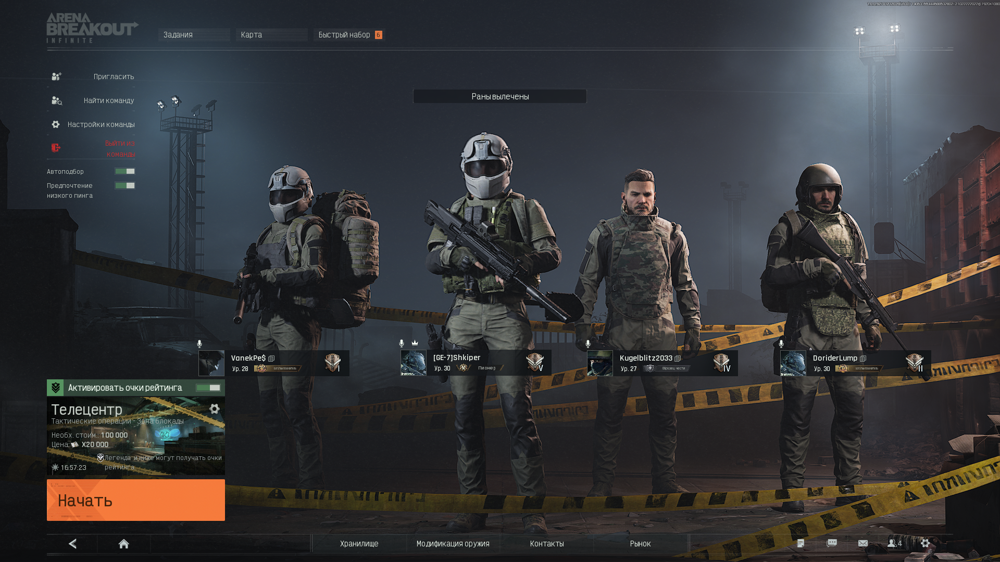
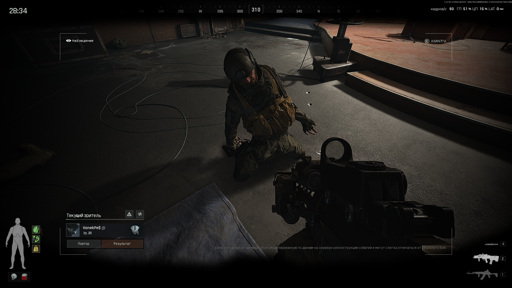
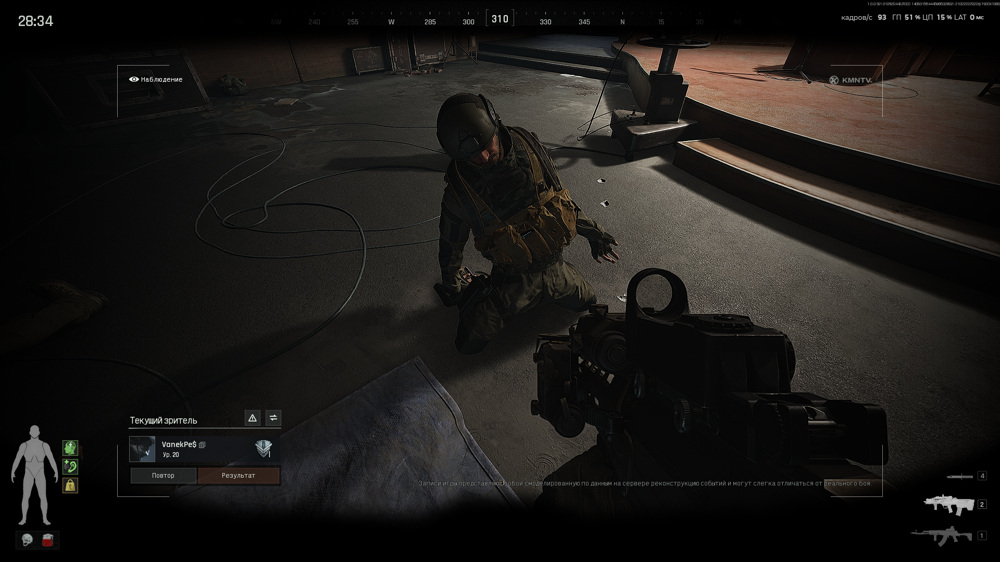
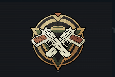
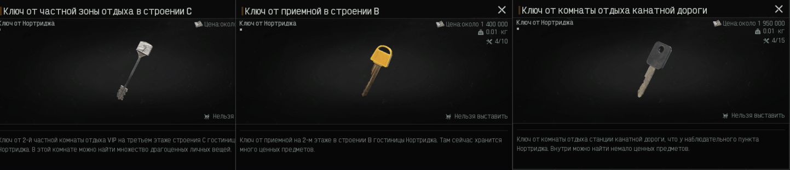
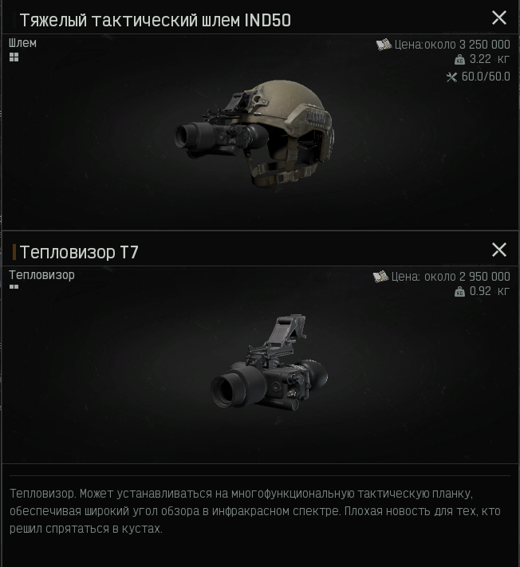
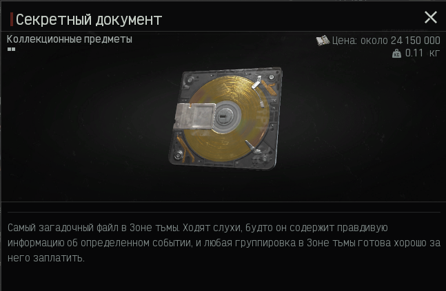

О команде
Наша команда участвует в турнирах по CS2 и ABI. Мы объединены стремлением к победе и командному духу.
Наши достижения
CS2
- 8/11 выигранных турниров
- 6,500+ часов практики
- 5.5 лет в киберспорте
ABI
- 1000+ успешных симуляций
- 70% выполнение стратегий
- 4 разработанных тактики
Игроки
ABI
ABI (Advanced Battle Interface) — наш тактический симулятор для отработки стратегий и рефлексов.
 

 

-

Участие в бета-тесте Arena Breakout Infinite
Наша команда участвовала в закрытом тестировании игры и помогала в её разработке отзывами.
-

3 года успешных рейдов в мобильной версии
Команда стабильно выполняла рейды в течение трёх лет в мобильном приложении Arena Breakout.
-

Каждый член отряда имеет тепловизор
Высокий уровень подготовки: все бойцы экипированы тепловизорами, что усиливает боевую эффективность.
-

Поиск и эвакуация секретного документа
Команда обнаружила редкий секретный документ и успешно доставила его на точку эвакуации под вражеским огнём.
Статистика команды
- Успешных рейдов: 300+
- Среднее время рейда: 20+ мин
- Общий урон: 400000+
Статистика игроков
- VanekPe$: 500+ рейдов, 130000+ урона
- Игорь: 450+ рейдов, 150000+ урона
- [GE-7]Shkiper 650+ рейдов, 120000+ урона
CS2
Мы активно участвуем в матчах по Counter-Strike 2 и тренируемся каждый день для повышения индивидуального скилла и командного взаимодействия.

DUST 2
🏆 8 побед из 10 последних матчей
Описание карты
Dust 2 — классическая карта CS, известная своей сбалансированностью и динамичным геймплеем. Идеально подходит для быстрого позиционного контроля и командной работы.
Основные тактики
- Т-подход: агрессивный заход через верхний тоннель и бомбоубежище.
- Защита А: ключевая роль — удерживать точку A с помощью смоков и флешек.
- Контроль миддла: открывает возможность быстрого рота и информации.
Советы от команды
- Используйте дымовые гранаты, чтобы закрыть обзор с моста.
- Коммуницируйте и помогайте друг другу на точках.
- Обращайте внимание на шаги врага для предотвращения заходов.
Статистика команды на Dust2
| Игрок | Средний урон | Убийства/Смерти | Роль |
|---|---|---|---|
| ЯША ЛАВА | 85 | 1.5 | Лидер |
| absosut | 92 | 1.7 | Клатчер |
| Игорь | 78 | 1.3 | Поддержка |
| GENSUXA | 80 | 1.4 | Разведка |
| POWER Дрищ | 76 | 1.2 | ТРЕНЕР |